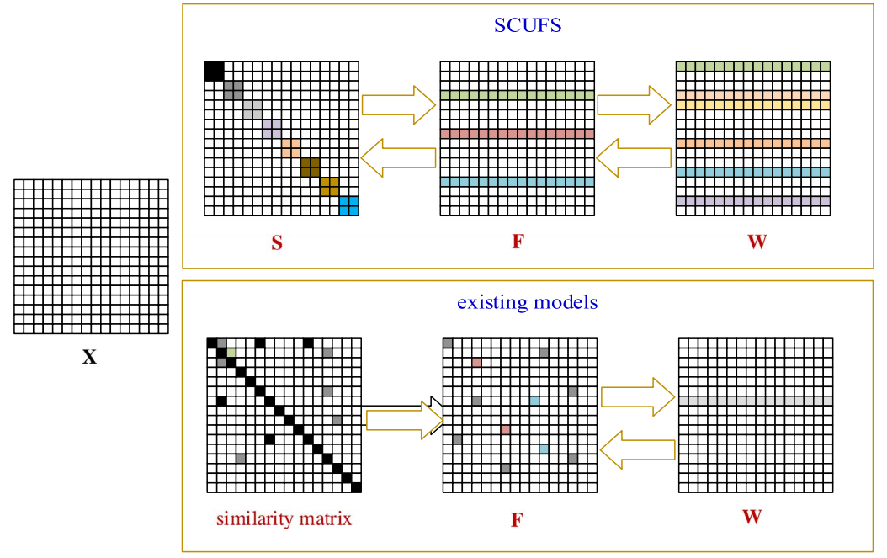

| Wencheng Zhu | |
I am a third year PhD student at the Department of Automation, Tsinghua Univeristy, in Intelligent Vision Group, under
the supervision of Professor Jiwen Lu
. | |
I did my Bachelors and Masters from Tianjin University of Computer Science and Technology, advised by Prof. Qinghua Hu and Pengfei Zhu. | |
Email / Google Scholar / GitHub / |
| Research | ||||||
I'm interested in computer vision, machine learning. My researches are mainly focused on video summarization, video language grounding and video segmentation. |
||||||
| News | ||||||
|
||||||
| Publications | ||||||
|

Nonlinear Subspace Clustering for Image Clustering Wencheng Zhu, Jiwen Lu,Jie Zhou Pattern Recognition Letter (PRL), 2018 PDF / BIB |  |
| Nonlinear subspace clustering Wencheng Zhu,Jiwen Lu,Jie Zhou IEEE International Conference on Image Processing (ICIP), 2017 PDF / BIB |  |
|  |
| Non-convex Regularized Self-representation for Unsupervised Feature Selection Pengfei Zhu, Wencheng Zhu, Weizhi Wang, Wangmeng Zuo, Qinghua Hu Image and Vision Computing (IVC) , 2016 PDF / CODE / BIB | |
| Set to Set Visual Tracking Wencheng Zhu,Pengfei Zhu, Qinghua Hu, Changqing Zhang Pacific Rim International Conference on Artificial Intelligence (PRICAI) , 2016 PDF / CODE / BIB |